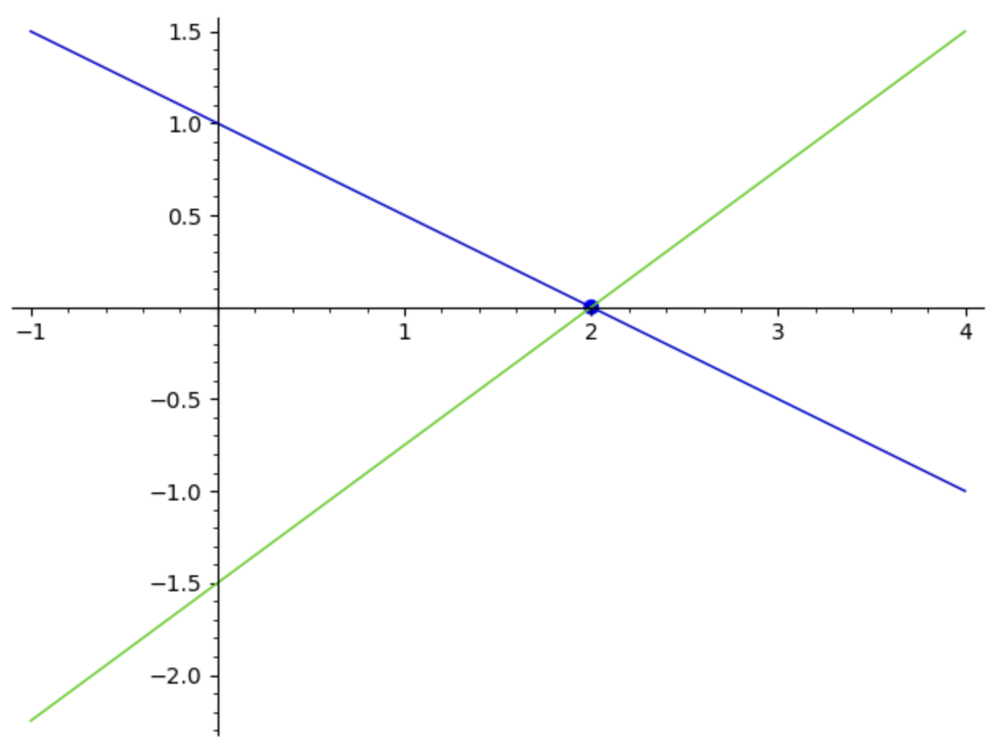
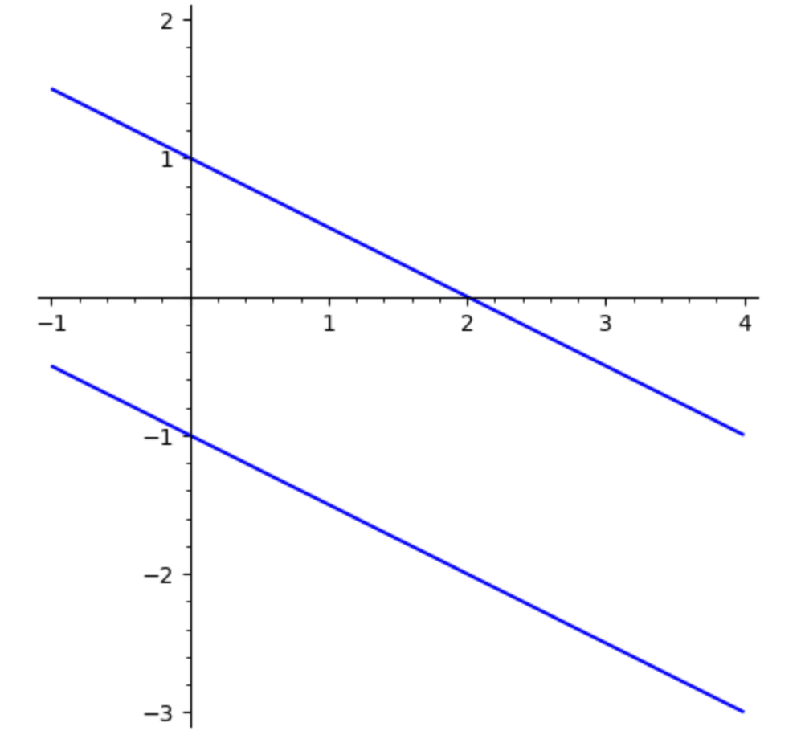
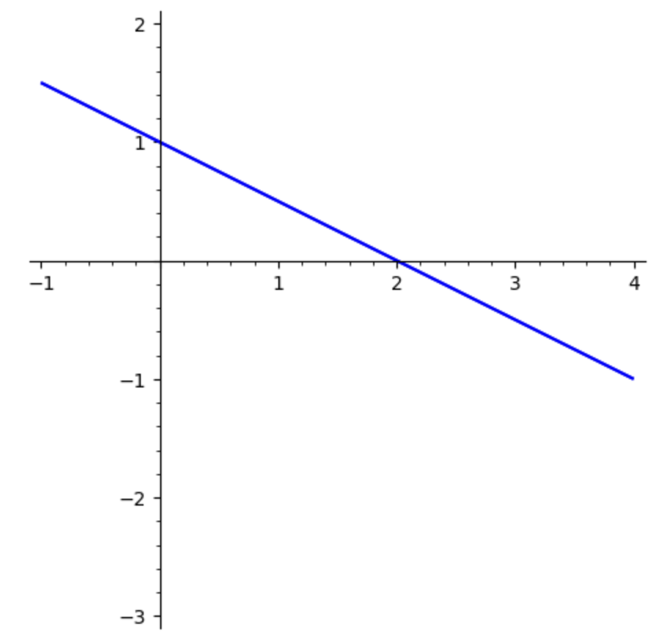

Section 7.1 Linear Algebra Basics
Elementary linear algebra deals with solving systems of linear equations and operations on matrices. As we will see throughout this unit, systems of linear equations and matrices have a wide variety of applications. We introduce some basic matrix operations and techniques for solving systems of equations. We begin with an example of solving simple systems of linear equations.
Example 7.1.1. Systems of Linear Equations.
Consider the system of linear equations
A solution to this system is a value of \(x\) and a value of \(y\) that satisfy both equations simultaneously. To algebraically find a solution, if it exists, one approach is to multiply the equations by appropriate non-zero constants and add them in such a way that only one variable remains. For instance, we could multiply the first equation by \(-3\text{:}\)
and then add the two equations together to get
Thus the unique solution is \(x = 2\text{,}\) \(y = 0\text{.}\) Graphically, we can think of solving a system of equations such as this as finding the point of intersection of the lines \(x + 2y = 2\) and \(3x - 4y = 6\) (or equivalently, \(y = -x/2 + 1\) and \(y = 3x/4 - 3/2\text{.}\) This graph is shown below. We see the lines intersect at the unique point \((2, 0)\text{.}\)

Not every system of linear equations has a unique solution. Consider the system
The graphs of these two lines are shown below. We see that the lines are parallel, so they never intersect meaning there is no solution.

Other systems have infinitely many solutions. Consider the system
Note that the second equation is simply 2 times the first equation. This means that any solution to the first equation will be a solution to the second equation. Graphically, this means these two equations have the same graph. The graphs of these two lines are shown below. There appears to be only one line because the lines lie on top of each other. These two lines intersect in infinitely many points, so there are infinitely many solutions to this system.

This analysis applies to systems with any number of variables. In general, a system of linear equations can have either one unique solution, no solution, or infinitely many solutions.
Observe that the method for algebraically solving a system of equations presented in the example involved only arithmetic and that the most important part of the process is the numbers involved. If we keep our work neatly organized, we don’t really need to write the variables in each step. To this end, we write the coefficients of the variables and the constants on the right-hand sides of the equations in the following form:
This leads to our definition of a matrix and a vector.
Definition 7.1.2.
A matrix is a two-dimensional array of numbers.
The size of a matrix is denoted \(a\times b\) where \(a\) is the number of rows and \(b\) is the number of columns (rows are horizontal and columns are vertical).
A column vector is a matrix with one column and a row vector is a matrix with one row. When we refer to a generic vector, we mean a column vector.
The size of a vector is denoted by the number of rows and is referred to as the dimension of the vector.
The symbol \(R^n\) denotes the set of all vectors of dimension \(n\text{.}\)
Matrices are usually named with capital letters, such as \(A\text{,}\) and vectors are named with bold-face lower-case letters, such as \(\mathbf{b}\text{.}\) When writing a vector by hand, we often use a lower-case letter with an overhead arrow, such as \(\vec{b}\text{.}\) For example,
is a \(2\times 3\) matrix and
is a \(3\times 1\) matrix, or a 3-dimensional vector. A vector can be written vertically using square brackets, as above, or it may be written horizontally using parentheses, as \(\mathbf{b} = (-2,1,3)\text{.}\)
The numbers inside a matrix are called elements. The position of an element is described by its row and column. For example, the element \(-1\) in matrix \(A\) is in row 2, column 3. We say that it is in location \((2, 3)\text{.}\)
Next we present by example some operations we can do in SageMath with matrices and vectors.
Example 7.1.3. Scalar Multiplication.
In the context of linear algebra, a scalar is another word for a real number. So scalar multiplication means we multiply a real number by a matrix or vector. To do this, we simply multiply each element of the matrix or vector by the real number. For the matrix \(A\) and vector \(\mathbf{b}\) defined above we can calculate, for example,
To enter these matrices into SageMath, we type
Note two different ways of entering matrices into Sage. We entered \(A\) by typing in the matrix as a list of its rows. For \(\mathbf{b}\text{,}\) we put in the dimensions of the matrix, then entered all the entries as one list.
If we want \(3A\) or \(-2\mathbf{b}\) for instance, we would type
Note that we cannot do a calculation such as \(3+A\) or \(-2-\mathbf{b}\text{.}\) In other words, we cannot do “scalar addition” or “scalar subtraction,” although we can add or subtract two scalars.
Example 7.1.4. Matrix Addition.
Matrices of the same size may be added by adding corresponding entries. For example
In SageMath, we could type
Subtraction works in the same way. Note that only matrices, or vectors, of the same size may be added or subtracted.
Example 7.1.5. Matrix Multiplication.
Consider multiplying the matrix \(A\) times the vector \(\mathbf{b}\) as defined above. This can be done as follows:
Note that this calculation involves multiplying a \(2 \times 3\) matrix by a \(3 \times 1\) matrix and the product is a \(2\times 1\) matrix. For a product of matrices to be defined, the “inside” dimensions of the factors must be equal. The “outside” dimensions of the factors give the size of the product. More precisely, the column dimension of the first matrix must equal the row dimension of the second matrix. The row dimension of the first matrix and the column dimension of the second matrix give the size of the product. In this example the product \(\mathbf{b}A\) is not defined because the dimensions do not match up. Also note that we do not use the symbols \(\times\) or \(\cdot\) to denote matrix multiplication. These symbols are reserved for other linear algebra operations.
We can do matrix multiplication in SageMath by typing:
Asking for \(\mathbf{b}A\) will result in an error message.
We can also multiply a matrix by a non-vector matrix as follows:
The product \(DC\) can be calculated,
but note that \(CD\ne DC\text{.}\) This illustrates that matrix multiplication is not commutative.
We use the * to indicate matrix multiplication in SageMath.
Example 7.1.6. Transpose.
To calculate the transpose of a matrix \(A\text{,}\) denoted \(A^T\text{,}\) we simply switch the rows and columns. Using the matrix \(A\) from above,
Note that the dimensions of \(A^T\) are the dimensions of \(A\) switched around.
Example 7.1.7. Length of a Vector.
Geometrically a 2-dimensional vector \(\mathbf{b} = (b_1, b_2)\) can be thought of as an arrow that starts at the origin \((0, 0)\) and terminates at the point \((b_1, b_2)\) on the \(x\)-\(y\) plane. The length of the vector \(\mathbf{b}\text{,}\) denoted \(\|\mathbf{b}\|\text{,}\) is the distance of this point from the origin. The length is also called the norm or Euclidean norm of the vector and is calculated as
This definition can be generalized to vectors of any dimension. The distance between two vectors \(\mathbf{d}\) and \(\mathbf{c}\) of the same dimension is defined as \(\|\mathbf{d}-\mathbf{c}\|\text{,}\) where \(\mathbf{d}-\mathbf{c}\) is the component-by-component difference of the vectors. So if \(\mathbf{d} = (1,1)\) and \(\mathbf{c}= (2,1)\text{,}\) we have
In SageMath, we can enter this as
In the real numbers, 1 acts as a multiplicative identity, in that for any real number \(a\text{,}\) we have \(1\cdot a = a\cdot 1 = a\text{.}\) There is a special matrix that plays this part for matrix multiplication called the identity matrix.
Definition 7.1.8.
The identity matrix \(I_n\) is an \(n\times n\) matrix (meaning the number of rows equals the number of columns, called a square matrix) with 1's along the main diagonal (from the top left corner to the bottom right corner) and 0's everywhere else. For example, the \(2\times 2\) identity matrix is
In SageMath, we can type
\(I_n\) is called an identity matrix because \(I_n \mathbf{v} = \mathbf{v}\) for any \(n\)-dimensional vector \(\mathbf{v}\text{.}\)
Earlier, we defined matrix multiplication, so we might wonder about matrix division. We cannot divide matrices, but we can multiply a matrix by its multiplicative inverse, when it exists.
Definition 7.1.9.
The inverse of a \(n\times n\) matrix \(A\text{,}\) denoted \(A^{-1}\text{,}\) is a matrix such that
We stress three important points about inverse matrices:
Only square matrices can have inverses.
Not every square matrix \(A\) has an inverse. If an inverse exists, \(A\) is said to be invertible.
Calculating an inverse by hand is not a trivial matter.
Example 7.1.10. Calculating a Matrix Inverse.
We can easily calculate the inverse of the matrix \(A=\begin{bmatrix} 1 & 2 \\ 3 & -4 \end{bmatrix}\) using SageMath.
We can confirm this is correct by verifying \(AA^{-1}=A^{-1}A=I_2\text{:}\)
Example 7.1.11. Systems of Linear Equations.
Consider again the system of linear equations
from Example 7.1.1, which we solved algebraically and graphically. Now we show how it can be solved with matrices. First we write the system in the following matrix form:
which we will abbreviate to the shorthand \(A\mathbf{x} = \mathbf{b}\text{.}\) Matrix \(A = \begin{bmatrix} 1 & 2 \\ 3 & -4 \end{bmatrix}\) is called the coefficient matrix, vector \(\mathbf{x} = \begin{bmatrix} x \\ y \end{bmatrix}\) is called the unknown vector, and vector \(\mathbf{b} = \begin{bmatrix} 2 \\ 6 \end{bmatrix}\) is called the constant vector.
To solve a system \(A\mathbf{x} = \mathbf{b}\) where \(A\) is \(n\times n\) we can multiply both sides by \(A^{-1}\) (assuming \(A^{-1}\) exists):
To solve this particular system in SageMath, we can type
The results show that the solution to the system is \(x=2\) and \(y=0\text{,}\) the same as we found algebraically and graphically. Observe that the coefficient matrix in this example is invertible and there is a unique solution. This observation is true in general for systems with any number of variables.
Example 7.1.12. Augmented Matrices.
A linear system such as the previous example can also be solved using an augmented matrix. To form this augmented matrix we combine matrix \(A\) and vector \(\mathbf{b}\) into one \(2\times 3\) matrix:
(We draw the vertical line to indicate where we've fused the matrix and the vector together.)
Next we perform elementary row operations on the augmented matrix. There are three possible elementary row operations:
Switch two rows of a matrix.
Multiply all elements of a row by a nonzero constant.
Add the elements of a row to the corresponding elements of another row.
These row operations are inspired by the algebraic solution we did in Example 7.1.1. Any combination of these operations is also allowed. In this example, we first multiply the first row by \(-3\) and add it to the second row and place the result in row 2, denoted \(-3R_1 + R_2 \to R_2\text{:}\)
The first row does not change. Next we perform \(-(1/10)R_2 \to R_2\text{:}\)
Lastly we perform \(-2R_2 + R_1 \to R_1\text{:}\)
Call this matrix \(B\text{.}\) The sequence of operations we just performed is generically called row-reduction or Gauss-Jordan elimination. Matrix \(B\) is called the reduced row echelon form (RREF) of the system. We say that \(B\) is row equivalent to the original matrix. This means that \(B\) represents a system of equations with the same set of solutions as the original system. Converting \(B\) to a system of equations yields \(x = 2\) and \(y = 0\text{,}\) the solution to the original system.
A matrix is in RREF if the following two conditions are met:
The first non-zero element in each row is a 1 (called a leading 1).
Each element above or below a leading 1 is 0.
Once an augumented matrix is reduced to its RREF, we can simply read the solution off the matrix (assuming there is a unique solution). No additional work is necessary. We can show theoretically that every matrix is row equivalent to exactly one matrix in RREF. The sequence of row operations used to find the RREF of a matrix is not unique, but the final result is unique.
Notice that the piece of the matrix to the left of the line is \(I_2\text{.}\) This will always happen if our system has one solution: we get the identity matrix on the left after row reducing the augmented matrix.
We can augment two matrices in SageMath as well as request the RREF of the equivalent system.
Example 7.1.13. Solving a System with 3 Variables.
Row-reduce the augmented matrix to its RREF to solve the system:
The augmented matrix is
First we perform the row operations \(R_1-2R_2\to R_2\) and \(R_1-2R_3\to R_3\text{:}\)
Next we perform \(-5R_2+R_3 \to R_3\text{:}\)
Then we perform \(R_1+R_2\to R_1\text{,}\) \(-R_2\to R_2\text{,}\) and \(-(1/6)R_3\to R_3\text{:}\)
Lastly, we perform \((1/2)R_1 - 2R_3\to R_1\) and \(R_2+R_3\to R_2\text{:}\)
This final matrix is in RREF and we see the solution is \(x = 2\text{,}\) \(y = 3\text{,}\) and \(z = 1\text{.}\)
We can use the same commands as we did in the \(2\times 2\) case to do the row reduction in SageMath:
Example 7.1.14. A System with No Solution.
As shown in Example 7.1.1, some systems have no solution. In this example we examine what this means in terms of an augmented matrix. Consider the system
Converting this last row to an equation yields \(0 = 1\text{,}\) an obvious contradiction. This means there is no solution to this system.
Example 7.1.15. A System with Many Solutions.
As shown in Example 7.1.1, some systems have infinitely many solutions. In this example we examine what this means in terms of the reduced form of an augmented matrix. As we will see in the next section, systems of this type occur frequently in applications. Consider the system
We use SageMath to set up the system's augmented matrix and to row-reduce it:
Converting this augmented matrix back to a system of equations yields
The last equation is meaningless. The second equation gives us the value of \(z\text{.}\) The first equation doesn’t give a specific value of any variable, but it does give us a relationship between \(x\) and \(y\text{.}\) We can rewrite this equation as \(x = 1 - 2y\text{.}\) The variable \(y\) is called a free variable, meaning it can take any value it wants. We rewrite the result in this form:
This result is called the general solution of the system. We get a specific solution by choosing a value of \(y\) and calculating \(x\text{.}\) For instance, choosing \(y = 1\) yields the specific solution \(x = -1\text{,}\) \(y = 1\text{,}\) \(z = 0\text{.}\)
Exercises Exercises
1.
Calculate
2.
Calculate
3.
Find the distance between
4.
Let \(B = \begin{bmatrix} 7 & 1 & -8 \\ 2 & 7 & -3 \\ -1 & 0 & -2 \end{bmatrix}\text{.}\) Calculate \(B^{-1}\) and show that \(B^{-1}B= I_3\) and \(BB^{-1} = I_3\text{.}\)
5.
Use matrices to solve the system
6.
Find the augmented matrix for the system of linear equations and find the solution by row-reducing.